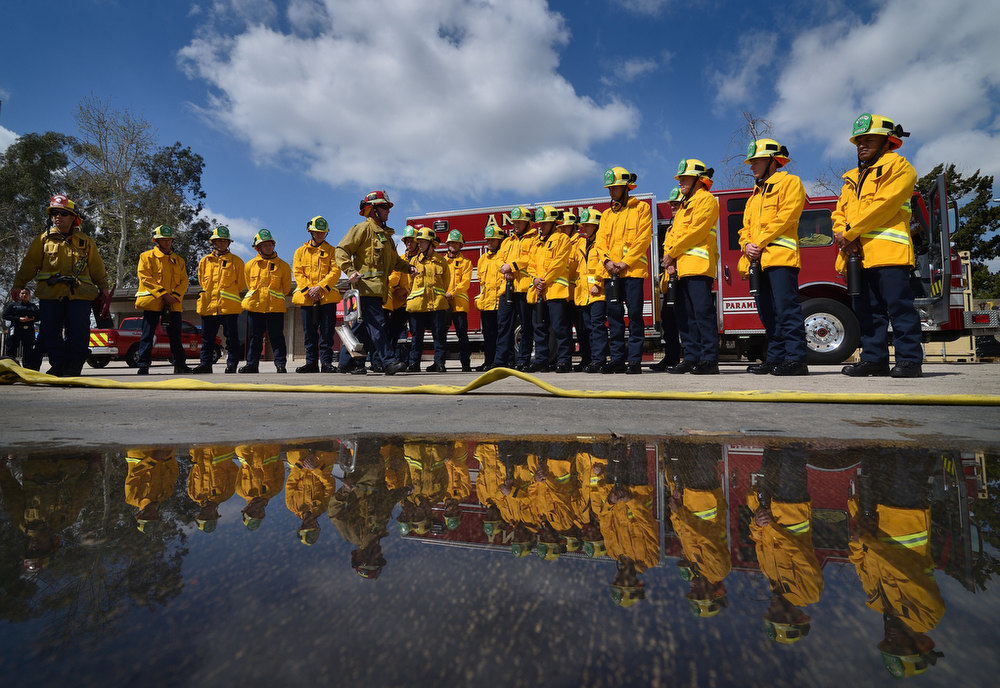
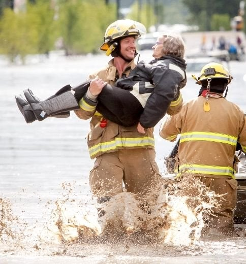
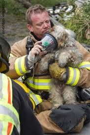
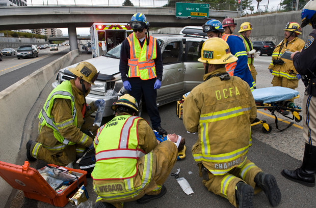
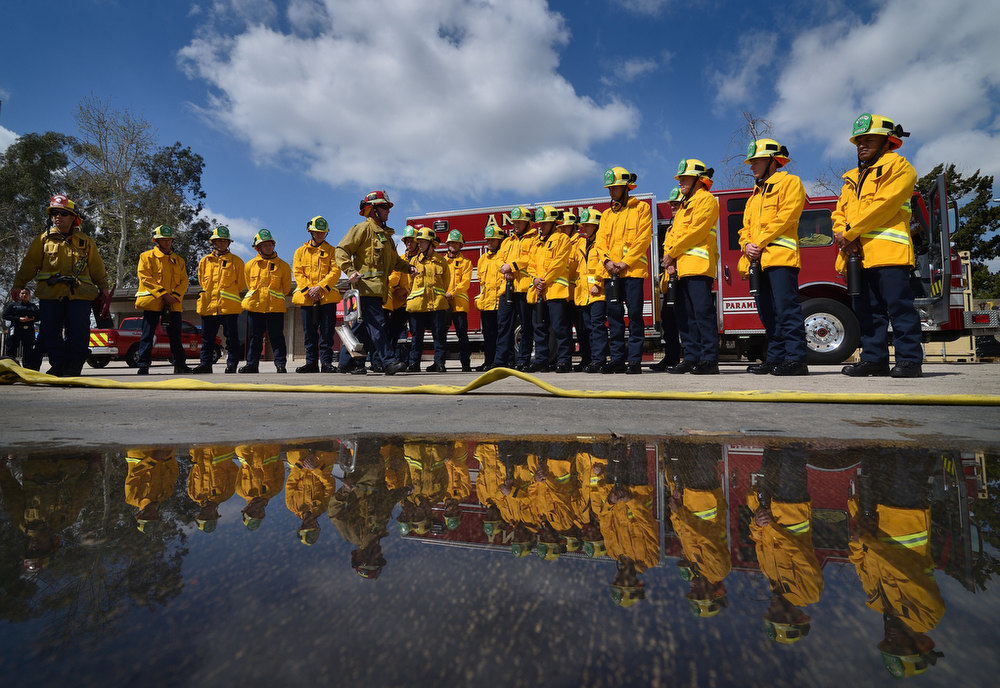
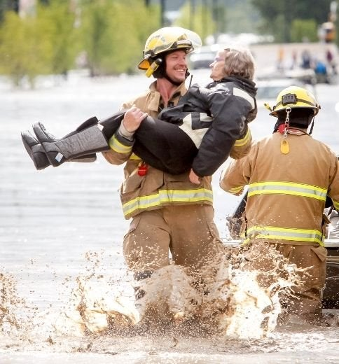
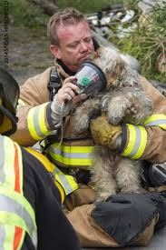
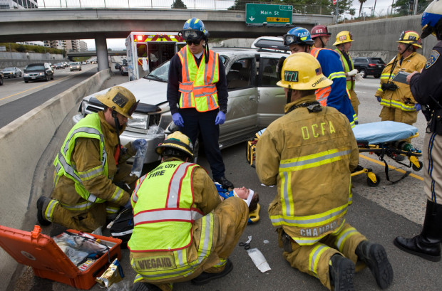

Que Hacen Los Bomberos


Los bomberos hacen muchas cosas. Ellos combaten contra la lumbre y salvan a las personas que están en peligro en
diferente situaciones.
Ellos tienen el certificado de EMT que son las personas que dan los primeros auxilios.
Los bomberos apagan la lumbre y ayudan a la gente que está en necesidad.
Los Beneficios

Unos beneficios son puedes tener ese satisfacción que salvaste a una persona de la muerte.
1. $76,000 y mas
2. Aseguranza de salud y dentista cubierto
3. Los bomberos tienen 5 dias de vacaciones. 10/31
4. Pueden estar cerca de la lumbre sin problema
Los Recesitos


EMT y academia de bomberos
EMT(primeros auxilios)
Graduación de a academia.
Academia de 12-14 semanas total de 600 hora de entrenamiento
Poder trabajar con equipo
Estar bien de salud
Anaheim Fire Chief

Pat Russell
Tiene 35 años en el servicio.
El es el encargado de los bomberos de Anaheim
El hizo todo lo que se necesita para ser un bombero
El no se está arriesgando mucho entrando a las casas que están en llamas
Héroes



Los bomberos son como héroes porque salvan a le gente que están en peligro.
5 Rasones porque son heroes
Niña de 4 años
Bombero
Ellos dejan a su familia para salvar a los que no son de su familia
Ellos tienen el certificado de EMT que son las personas que dan los primeros auxilios. Los bomberos apagan la lumbre y ayudan a la gente que está en necesidad.
Los Beneficios
Unos beneficios son puedes tener ese satisfacción que salvaste a una persona de la muerte.
1. $76,000 y mas
2. Aseguranza de salud y dentista cubierto
3. Los bomberos tienen 5 dias de vacaciones. 10/31
4. Pueden estar cerca de la lumbre sin problema
Los Recesitos

EMT y academia de bomberos
EMT(primeros auxilios)
Graduación de a academia. Academia de 12-14 semanas total de 600 hora de entrenamiento
Poder trabajar con equipo
Estar bien de salud
Anaheim Fire Chief
Pat Russell
Tiene 35 años en el servicio.
El es el encargado de los bomberos de Anaheim
El hizo todo lo que se necesita para ser un bombero
El no se está arriesgando mucho entrando a las casas que están en llamas
Héroes
 